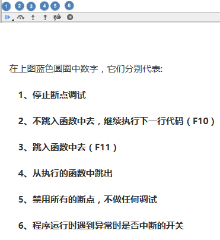

【第181期】F12Console的用法，以及如何Debug程序
小课堂【北京 第181期】
分享人：张雪飞
1.背景介绍
2.知识剖析
3.常见问题
4.解决方案
5.编码实战
6.扩展思考
7.参考文献
8.更多讨论
1.背景介绍
Chrome 中 Console 是用于显示 JS和 DOM 对象信息的单独窗口。并且向 JS 中注入1个 console 对象， 使用该对象 可以输出信息到 Console 窗口中。在具备调试功能的浏览器上，window 对象中会注册一个名为 console 的成员变量，指代调试工具中的控制台，console 有很多方法，比如我们最常用的log()
1.console对象
console对象代表浏览器的javascript控制台，主要有两个作用：1.显示网页代码运行时的错误信息。2.提供一个命令行 接口，用来与网页代码互动
2.如何使用开发者工具调试js代码
使用console对象的内置方法，或者使用开发者工具的断点调试功能。
2.知识剖析
1.console显示信息的命令
-
.log()方法：在console窗口显示信息
.log 用于输出普通信息
.info 用于输出提示性信息
.error用于输出错误信息
.warn用于输出警示信息
.debug用于输出调试信息
-
.table()方法,把有复合数据的对象作为表格显示
.assert()方法，验证条件并输出
.time(),.timeEnd()方法，计算一个操作消耗的时间
其它方法：
.group(),.groupend()方法：将显示信息分组
.dir()显示对象的所有属性
.clear():console窗口清屏
.trace():显示在堆栈中的调用路径
.profile([title])打开Javascript性能测试开关。可选参数title会在打印性能测试报告时在报告的开头输出。
.profileEnd()关闭Javascript性能测试开关并输出报告。
2.用开发者工具进行代码调试的方法
- 使用alert（）方法暂停并查看信息
- 使用console对象的上述方法
- console方法的命令行
- 开发者工具的断点调试功能
3.常见问题
什么是断点调试
什么sources选项卡？
断点调试是最基础的一个调试方法，在调试的过程中查看变量和函数的变化状态， 这使得不可见的程序运行过程变得可视化。断点调试都在source选项卡中进行。

source选项

a. 上图source选项代码序列上的蓝色标签即为断点的标识，断点也显示在Breakpoint 选项中，可以在Breakpoint选项卡中勾掉暂时不用的断点，后面再使用的时候可以再 勾选，这样就不用再代码中翻来翻去迷失方向了。 b. 这几个小图标前两个和调试时页面的两个按钮相同， 分别是暂停/开始和单步； 往右边两个向上向下的箭头意思是进入函数，和（执行完）跳出函数；后面的一个是 忽略所有断点运行，这样被避免更改完之后，点掉所有断点执行一遍在挨个加断点的尴尬
c. watch窗口： 点击“+”添加一个想要监视的变量，在整个调试过程中，这个变量会一直显示在这里， 就不用在函数之间苦苦寻找，然后再“hover”上去显示它的值，非常适合全局变量的监视。
5.扩展思考
- 平时上网浏览，看到感兴趣的效果，可以用开发者工具直接学习和修改
- 练习和项目中的遇到的bug，可以在开发者工具中修改，以便找到找到解决办法
6.更多讨论
为什么不提倡用alert进行调试？
一方面，传统的alert调试方式已经渐渐不能满足前端开发的种种场景。而且alert调试方 式弹出的调试信息，那个窗口着实不太美观，而且会遮挡部分页面内容，着实有些不太友好。 另一方面，alert的调试信息会中断代码，阻碍页面的继续渲染。这就意味着开发人员调试完成后， 必须手动清除这些调试代码，实在有些麻烦。
8.参考文献
- console对象
http://www.360doc.com/content/14/0917/16/14663225_410219222.shtml - .time()方法
http://www.jb51.net/article/59126.htm - source选项卡
http://web.jobbole.com/82562/ - 详细的开发者工具说明
http://web.jobbole.com/89344/?utm_source=blog.jobbole.com&utm_medium=relatedPosts - 知乎
https://www.zhihu.com/question/27414902
谢谢观看
BY：包彭亮|冯强|刘其勇